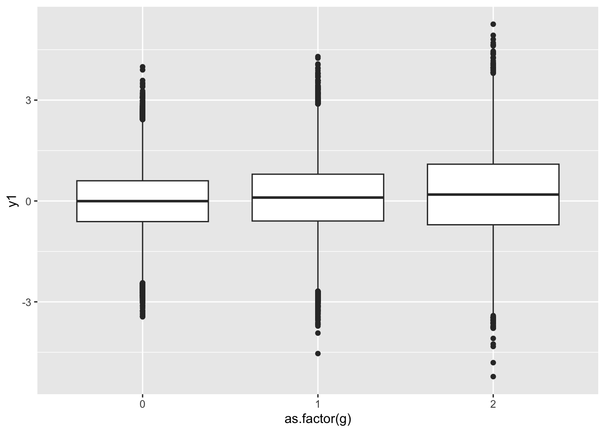
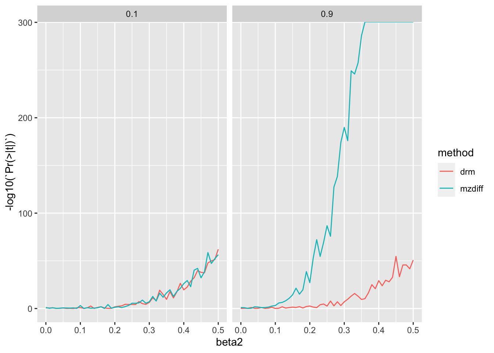
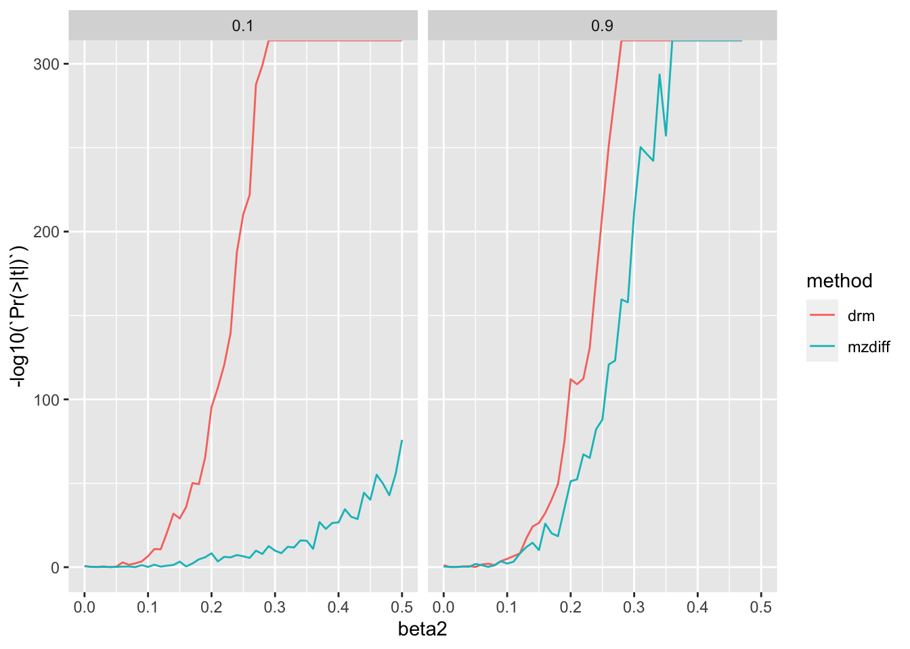
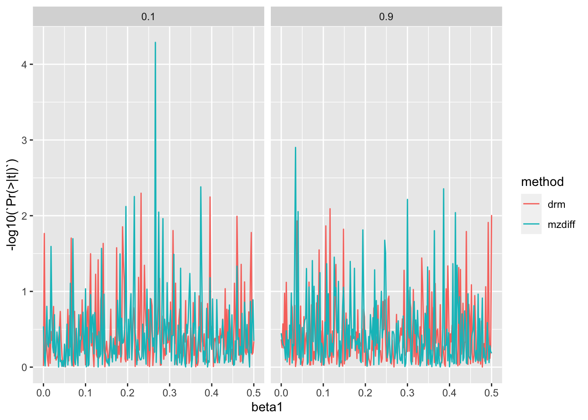
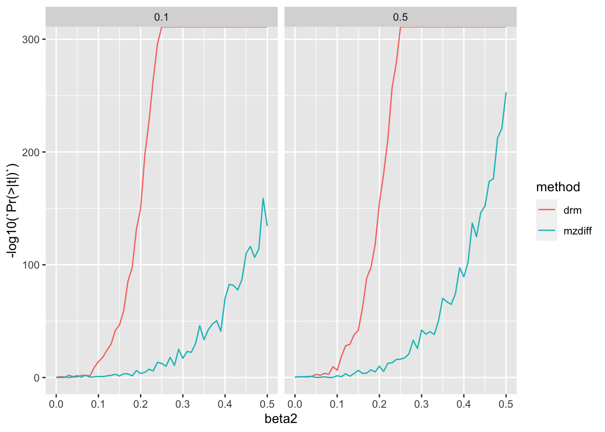

library(dplyr)
Attaching package: 'dplyr'The following objects are masked from 'package:stats':
filter, lagThe following objects are masked from 'package:base':
intersect, setdiff, setequal, unionlibrary(ggplot2)\[ y_i = \alpha + \beta_{1,j}G_{ij} + z_i + v_i + e_i \]
where \(\alpha\) is an intercept term, \(\beta_{1,j}\) is the additive effect of SNP $j$, \(G_{i,j}\) is the genotype value for individual \(i\) at SNP $j$, \(z_i\) is the remaining polygenic risk
\[ z_i \sim N(0, \sigma^2_{g} - 2p_j(1-p_j)\beta_{1,j}^2) \]
\(v_i\) is the SNP’s influence on dispersion where
\[ v_i \sim N(0, \beta_{2,j}G_{i,j}) \]
and \(e_i\) is the residual variance
\[ e_i \sim N(0, 1 - \sigma^2_g - \sigma^2_v) \]
To estimate dispersion effects amongst unrelateds use the deviation regression model (DRM) from Marderstein et al 2021 AJHG (https://doi.org/10.1016/j.ajhg.2020.11.016).
To estimate variance heterogeneity effects using MZs, simply
\[ |y_{i,A} - y_{i,B}| = \hat{\beta}_{2,j}G_{i,j} + \epsilon_i \]
where A and B represent the individuals in the MZ pair.
To estimate variance heterogeneity effects using siblings, it is identical to the MZ method but restricted to sibling pairs who have identity by state value of 2 (i.e. share the same genotype value at the SNP being tested).
library(dplyr)
Attaching package: 'dplyr'The following objects are masked from 'package:stats':
filter, lagThe following objects are masked from 'package:base':
intersect, setdiff, setequal, unionlibrary(ggplot2)Method for simulating dispersion effects in unrelated individuals
sim_pop <- function(n, beta1, beta2, af, h2)
{
g <- rbinom(n, 2, af)
prs <- g * beta1
vg <- rnorm(n, 0, h2)
v <- rnorm(n, 0, beta2 * g)
ve <- rnorm(n, 0, sqrt(1 - var(vg) - var(v) - var(prs)))
y <- prs + v + vg + ve
return(tibble(
g, y
))
}
a <- sim_pop(100000, 0.1, 0.5, 0.3, 0.1)
var(a) g y
g 0.41881431 0.04145241
y 0.04145241 1.00183156Method for simulating dispersion effects in monozogytic twins
sim_mz <- function(n, beta1, beta2, af, h2)
{
g <- rbinom(n, 2, af)
prs <- g * beta1
vg <- rnorm(n, 0, h2)
v1 <- rnorm(n, 0, beta2 * g)
ve1 <- rnorm(n, 0, sqrt(1 - var(vg) - var(v1) - var(prs)))
y1 <- prs + v1 + vg + ve1
v2 <- rnorm(n, 0, beta2 * g)
ve2 <- rnorm(n, 0, sqrt(1 - var(vg) - var(v2) - var(prs)))
y2 <- prs + v2 + vg + ve2
return(tibble(
g, y1, y2
))
}
a <- sim_mz(100000, 0.1, 0.5, 0.3, 0.1)
var(a) g y1 y2
g 0.41789069 0.04179887 0.04360385
y1 0.04179887 1.00074619 0.01158774
y2 0.04360385 0.01158774 0.99856453See what dispersion looks like from this simulation
a %>%
ggplot(., aes(x=as.factor(g), y=y1)) +
geom_boxplot()
Summarise the dispersion. Note - how would you scale it to the MZ pair mean?
a <- sim_mz(100000, 0.1, 0.5, 0.3, 0.8)
a %>%
group_by(g) %>%
summarise(
m=mean(y1),
v=var(y1),
mzv=mean(abs(y1-y2))
)# A tibble: 3 × 4
g m v mzv
<int> <dbl> <dbl> <dbl>
1 0 -0.00271 0.795 0.456
2 1 0.102 1.06 0.724
3 2 0.211 1.83 1.21 Method for testing unrelateds using DRM
test_drm <- function(g, y)
{
y.i <- tapply(y, g, median, na.rm=T)
z.ij <- abs(y - y.i[g+1])
summary(lm(z.ij ~ g))$coef %>%
as_tibble() %>%
slice(2) %>%
mutate(method="drm")
}
test_drm(a$g, a$y1)# A tibble: 1 × 5
Estimate `Std. Error` `t value` `Pr(>|t|)` method
<dbl> <dbl> <dbl> <dbl> <chr>
1 0.152 0.00295 51.6 0 drm Method for testing using MZs
test_mz <- function(g, y1, y2)
{
yd1 <- abs(y1-y2)
r1 <- summary(lm(yd1 ~ g))$coef %>%
as_tibble() %>%
slice(2) %>%
mutate(method="mzdiff")
r1
}
test_mz(a$g, a$y1, a$y2)# A tibble: 1 × 5
Estimate `Std. Error` `t value` `Pr(>|t|)` method
<dbl> <dbl> <dbl> <dbl> <chr>
1 0.332 0.00249 133. 0 mzdiffA trait with high heritability will have vQTL (dispersion) effects that are relatively large in MZs, but heritability shouldn’t have a major part to play in unrelateds for estimating vQTL effects.
Start with simulations where population is compared against mz and n pop = n mz pairs.
param <- expand.grid(
beta1 = 0,
beta2 = seq(0, 0.5, by=0.01),
h2 = c(0.1, 0.9),
af = 0.3,
n = 10000
)
dim(param)[1] 102 5res1 <- lapply(1:nrow(param), function(i)
{
a <- do.call(sim_mz, param[i,])
if(any(is.na(a$y1)) | any(is.na(a$y2)))
{
return(NULL)
}
bind_rows(
test_mz(a$g, a$y1, a$y2),
test_drm(a$g, a$y1)
) %>%
bind_cols(., param[i,])
}) %>%
bind_rows()res1 %>% filter(n==10000) %>%
ggplot(., aes(x=beta2, y=-log10(`Pr(>|t|)`))) +
geom_line(aes(colour=method)) +
facet_grid(. ~ h2)
They are comparable at low heritability but as heritability increases, MZ method has a distinct advantage.
Now compare with more realistic sample sizes, 10k mz pairs vs 500k unrelateds
param <- expand.grid(
beta1 = 0,
beta2 = seq(0, 0.5, by=0.01),
h2 = c(0.1, 0.9),
af = 0.32
)
dim(param)[1] 102 4res2 <- lapply(1:nrow(param), function(i)
{
a1 <- do.call(sim_mz, param[i,] %>% mutate(n=10000))
a2 <- do.call(sim_mz, param[i,] %>% mutate(n=500000))
if(any(is.na(a1$y1)) | any(is.na(a1$y2)) | any(is.na(a2$y1)) | any(is.na(a2$y2)))
{
return(NULL)
}
bind_rows(
test_mz(a1$g, a1$y1, a1$y2),
test_drm(a2$g, a2$y1)
) %>%
bind_cols(., param[i,])
}) %>%
bind_rows()Warning in sqrt(1 - var(vg) - var(v1) - var(prs)): NaNs producedWarning in rnorm(n, 0, sqrt(1 - var(vg) - var(v1) - var(prs))): NAs producedWarning in sqrt(1 - var(vg) - var(v2) - var(prs)): NaNs producedWarning in rnorm(n, 0, sqrt(1 - var(vg) - var(v2) - var(prs))): NAs producedWarning in sqrt(1 - var(vg) - var(v1) - var(prs)): NaNs producedWarning in rnorm(n, 0, sqrt(1 - var(vg) - var(v1) - var(prs))): NAs producedWarning in sqrt(1 - var(vg) - var(v2) - var(prs)): NaNs producedWarning in rnorm(n, 0, sqrt(1 - var(vg) - var(v2) - var(prs))): NAs producedWarning in sqrt(1 - var(vg) - var(v1) - var(prs)): NaNs producedWarning in rnorm(n, 0, sqrt(1 - var(vg) - var(v1) - var(prs))): NAs producedWarning in sqrt(1 - var(vg) - var(v2) - var(prs)): NaNs producedWarning in rnorm(n, 0, sqrt(1 - var(vg) - var(v2) - var(prs))): NAs producedWarning in sqrt(1 - var(vg) - var(v1) - var(prs)): NaNs producedWarning in rnorm(n, 0, sqrt(1 - var(vg) - var(v1) - var(prs))): NAs producedWarning in sqrt(1 - var(vg) - var(v2) - var(prs)): NaNs producedWarning in rnorm(n, 0, sqrt(1 - var(vg) - var(v2) - var(prs))): NAs producedWarning in sqrt(1 - var(vg) - var(v1) - var(prs)): NaNs producedWarning in rnorm(n, 0, sqrt(1 - var(vg) - var(v1) - var(prs))): NAs producedWarning in sqrt(1 - var(vg) - var(v2) - var(prs)): NaNs producedWarning in rnorm(n, 0, sqrt(1 - var(vg) - var(v2) - var(prs))): NAs producedggplot(res2, aes(x=beta2, y=-log10(`Pr(>|t|)`))) +
geom_line(aes(colour=method)) +
facet_grid(. ~ h2)
It looks like you’d just be better off with estimation in populations.
param <- expand.grid(
beta1 = seq(0, 0.5, by=0.002),
beta2 = 0,
h2 = c(0.1, 0.9),
af = 0.32
)
dim(param)[1] 502 4res3 <- lapply(1:nrow(param), function(i)
{
a1 <- do.call(sim_mz, param[i,] %>% mutate(n=10000))
a2 <- do.call(sim_mz, param[i,] %>% mutate(n=500000))
if(any(is.na(a1$y1)) | any(is.na(a1$y2)) | any(is.na(a2$y1)) | any(is.na(a2$y2)))
{
return(NULL)
}
bind_rows(
test_mz(a1$g, a1$y1, a1$y2),
test_drm(a2$g, a2$y1)
) %>%
bind_cols(., param[i,])
}) %>%
bind_rows()Plot type 1 error
ggplot(res3, aes(x=beta1, y=-log10(`Pr(>|t|)`))) +
geom_line(aes(colour=method)) +
facet_grid(. ~ h2)
Type 1 error and number of false positives after multiple testing correction
res3 %>%
mutate(fdr=p.adjust(`Pr(>|t|)`, "fdr")) %>%
group_by(method, h2) %>%
summarise(
t1 = sum(`Pr(>|t|)` < 0.05, na.rm=T)/sum(!is.na(`Pr(>|t|)`)),
nfdr = sum(fdr < 0.05)/sum(!is.na(`Pr(>|t|)`))
)`summarise()` has grouped output by 'method'. You can override using the
`.groups` argument.# A tibble: 4 × 4
# Groups: method [2]
method h2 t1 nfdr
<chr> <dbl> <dbl> <dbl>
1 drm 0.1 0.0637 0
2 drm 0.9 0.0478 0
3 mzdiff 0.1 0.0558 0
4 mzdiff 0.9 0.0757 0Under normal distribution type-1 error rate is well controlled.
Generate a set of sib pairs with the following specification
Have PRS such that IBD ~ N(0.5, sqrt(0.037))
h2 specified
ce specified (shared variance between sibs
one SNP has a mean and variance effect
scaled phenotypes ~ N(0, 1)
sim_sibs <- function(af, nfam, beta1, beta2, h2, c2)
{
# Choose number of SNPs to be expected number of recombination events
# in order to give appropriate distribution of IBD
nsnp <- 87
af <- rep(af, nsnp)
dads <- matrix(0, nfam, nsnp)
mums <- matrix(0, nfam, nsnp)
sibs1 <- matrix(0, nfam, nsnp)
sibs2 <- matrix(0, nfam, nsnp)
ibd <- matrix(0, nfam, nsnp)
ibs <- matrix(0, nfam, nsnp)
for(i in 1:nsnp)
{
dad1 <- rbinom(nfam, 1, af[i]) + 1
dad2 <- (rbinom(nfam, 1, af[i]) + 1) * -1
mum1 <- rbinom(nfam, 1, af[i]) + 1
mum2 <- (rbinom(nfam, 1, af[i]) + 1) * -1
dadindex <- sample(c(TRUE, FALSE), nfam, replace=TRUE)
dadh <- rep(NA, nfam)
dadh[dadindex] <- dad1[dadindex]
dadh[!dadindex] <- dad2[!dadindex]
mumindex <- sample(c(TRUE, FALSE), nfam, replace=TRUE)
mumh <- rep(NA, nfam)
mumh[mumindex] <- mum1[mumindex]
mumh[!mumindex] <- mum2[!mumindex]
sib1 <- cbind(dadh, mumh)
dadindex <- sample(c(TRUE, FALSE), nfam, replace=TRUE)
dadh <- rep(NA, nfam)
dadh[dadindex] <- dad1[dadindex]
dadh[!dadindex] <- dad2[!dadindex]
mumindex <- sample(c(TRUE, FALSE), nfam, replace=TRUE)
mumh <- rep(NA, nfam)
mumh[mumindex] <- mum1[mumindex]
mumh[!mumindex] <- mum2[!mumindex]
sib2 <- cbind(dadh, mumh)
ibd[,i] <- (as.numeric(sib1[,1] == sib2[,1]) + as.numeric(sib1[,2] == sib2[,2])) / 2
sibs1[,i] <- rowSums(abs(sib1) - 1)
sibs2[,i] <- rowSums(abs(sib2) - 1)
dads[,i] <- dad1 - 1 + abs(dad2) - 1
mums[,i] <- mum1 - 1 + abs(mum2) - 1
# l[[i]] <- (sum(sib1[,1] == sib2[,1]) / nsnp + sum(sib1[,2] == sib2[,2]) / nsnp) / 2
}
n <- nfam
# Make phenotypes
ce <- rnorm(n, 0, sqrt(c2))
v1 <- rnorm(n, 0, beta2 * sibs1[,1])
v2 <- rnorm(n, 0, beta2 * sibs2[,1])
e1 <- rnorm(n, 0, sqrt(1 - h2 - c2 - var(v1)))
e2 <- rnorm(n, 0, sqrt(1 - h2 - c2 - var(v2)))
b <- rnorm(nsnp-1, 0, 1)
h2_1 <- beta1^2 * af[1] * (1-af[1]) * 2
h2_res <- h2 - h2_1
prs1 <- scale(sibs1[,-1] %*% b) * sqrt(h2_res)
prs2 <- scale(sibs2[,-1] %*% b) * sqrt(h2_res)
y1 <- sibs1[,1] * beta1 + prs1 + v1 + ce + e1
y2 <- sibs2[,1] * beta1 + prs2 + v2 + ce + e2
return(tibble(
ibd = rowMeans(ibd),
g1 = sibs1[,1],
g2 = sibs2[,1],
prs1,
prs2,
y1,
y2
))
}Notes
In this model if the allele frequency is higher, then the genotype class with the larger variance is more common, which means that effect alleles are not reflexive in terms of variances
I think this use with siblings may have problems due to LD. If there is incomplete LD with another causal variant elsewhere close by then the mean effect of that causal variant will contribute to the variance effect estimated at the variant
fam <- sim_sibs(0.3, 10000, 0.1, 0.4, 0.6, 0.1)
cor(fam) %>% round(4) ibd g1 g2 prs1 prs2 y1 y2
ibd 1.0000 -0.0020 0.0068 -0.0063 -0.0045 0.0054 0.0077
g1 -0.0020 1.0000 0.5061 0.0085 0.0212 0.0649 0.0551
g2 0.0068 0.5061 1.0000 0.0089 0.0076 0.0329 0.0665
prs1 -0.0063 0.0085 0.0089 1.0000 0.4877 0.7760 0.3816
prs2 -0.0045 0.0212 0.0076 0.4877 1.0000 0.3818 0.7721
y1 0.0054 0.0649 0.0329 0.7760 0.3818 1.0000 0.4011
y2 0.0077 0.0551 0.0665 0.3816 0.7721 0.4011 1.0000Now how to estimate variance effect? At a locus restrict to sib pairs who are IBD = 1
fam <- sim_sibs(af=0.5, nfam=40000, beta1=0.1, beta2=0.2, h2=0.3, c2=0.1)
fam# A tibble: 40,000 × 7
ibd g1 g2 prs1[,1] prs2[,1] y1[,1] y2[,1]
<dbl> <dbl> <dbl> <dbl> <dbl> <dbl> <dbl>
1 0.477 1 1 -0.333 0.360 -0.244 0.210
2 0.437 2 2 -0.376 -0.516 -0.455 0.164
3 0.511 1 1 0.0654 -0.613 0.247 -1.47
4 0.523 2 1 0.652 0.371 1.14 0.728
5 0.506 0 0 -0.0106 0.456 0.0296 0.410
6 0.483 1 2 0.0979 0.391 1.84 1.66
7 0.471 1 2 0.0902 0.495 0.0733 -0.518
8 0.460 1 1 -0.451 -0.160 -0.941 0.344
9 0.511 1 0 0.734 0.532 1.73 0.803
10 0.477 1 0 0.00962 -0.546 1.15 -0.801
# … with 39,990 more rowsTest for variance QTL
fam <- sim_sibs(af=0.5, nfam=40000, beta1=0.1, beta2=0.2, h2=0.01, c2=0.01)
f1 <- subset(fam, g1==g2)
test_mz(f1$g1, f1$y1, f1$y2)# A tibble: 1 × 5
Estimate `Std. Error` `t value` `Pr(>|t|)` method
<dbl> <dbl> <dbl> <dbl> <chr>
1 0.0535 0.00795 6.73 1.78e-11 mzdiffPower sims
param <- expand.grid(
beta1 = 0,
beta2 = seq(0, 0.5, by=0.01),
c2 = c(0),
h2 = c(0.1, 0.5),
af = c(0.5)
)
dim(param)[1] 102 5res4 <- lapply(1:nrow(param), function(i)
{
a1 <- do.call(sim_sibs, param[i,] %>% mutate(nfam=22000))
a2 <- do.call(sim_pop, param[i,] %>% select(-c(c2)) %>% mutate(n=500000))
if(any(is.na(a1$y1)) | any(is.na(a1$y2)) | any(is.na(a2$y)))
{
return(NULL)
}
bind_rows(
a1 %>% filter(g1==g2) %>% select(g=g1, y1, y2) %>% do.call(test_mz, .),
do.call(test_drm, a2)
) %>%
bind_cols(., param[i,])
}) %>%
bind_rows()res4 %>% mutate(sharing=c2+h2) %>% filter(beta1==0) %>%
ggplot(., aes(x=beta2, y=-log10(`Pr(>|t|)`))) +
geom_line(aes(colour=method, groups=af)) +
facet_grid(. ~ sharing)Warning in geom_line(aes(colour = method, groups = af)): Ignoring unknown
aesthetics: groups
Similar to MZ method - quite a substantial benefit from leveraging large sample sizes of unrelateds compared to using siblings.